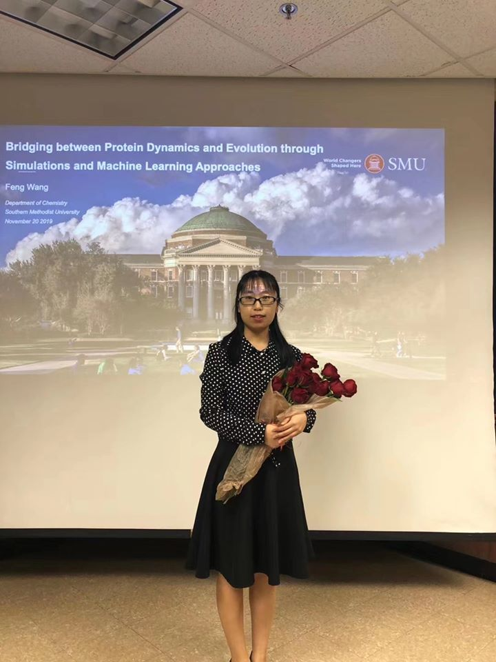
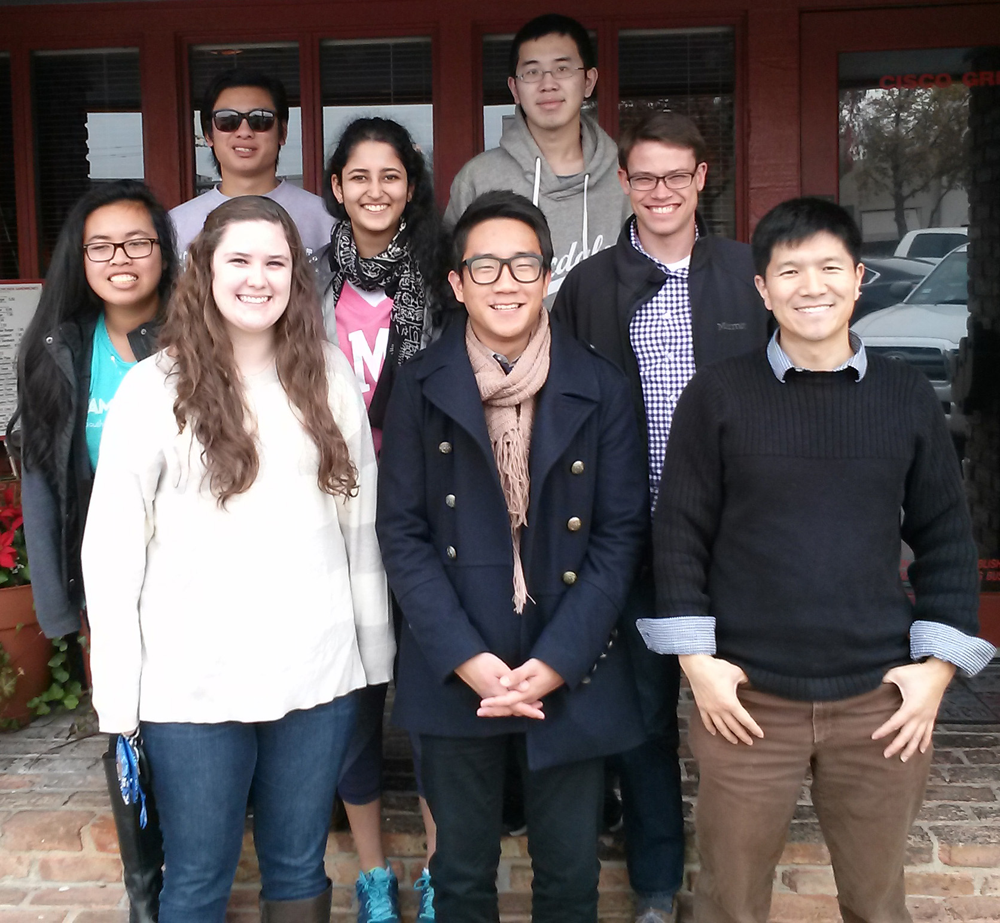

Hao Tian (third from the left in photo) received ACS COMP Division 2022 Fall Chemical Computing Group Excellence Student Travel Award. He was one of five nationwide recipients.
Dr. Francesco Trozzi's Ph.D. degree defense, April 27, 2022. (Dr. Zilin Song attended the ceremony virtually.)
End of year gathering lunch, December, 2021.
Allison received SMU President's Excellence Award for Scholar Volunteer, April 12, 2021
End of year gathering and farewell lunch for Feng in Royal Sichuan, December 04, 2019

Dr. Feng Wang's Ph.D. degree defense, November 20, 2019
Tao Group, September 20, 2019
A group of serious bowlers, July 14, 2019
A nice Sunday lunch before some real fun, July 14, 2019
Dr. Hongyu Zhou's Ph.D. degree defense, April 18, 2019
End of year gathering, December 05, 2018
Thanksgiving feast, November 22, 2018

Tao Group, August 28, 2018
A nice summer "Escape" for the whole group, July 1, 2018
Group dinner after a great "Escape" at Shell Shack, July 1, 2018
Feng Wang presented at the first-ever Three Minute Thesis
competition at SMU March 29, 2018
Hongyu Zhou won Wiley Best Poster Award at 27th Austin Symposium in Dallas. March 4, 2018
A rather late "end of the year" or more proper as "end of the Chinese year" group lunch at Tokyo One! (February 5, 2018)
A little bit of summer fun for the whole group! (June 17, 2017)
Farewell lunch for Hao and Zheng, May 31, 2017
Thanksgiving gathering, November 24, 2016
After group lunch at Royal Sichuan, December 17, 2015

After group lunch at Cisco Grill in Snider Plaza, December 10, 2014
Tao Research Group, September 26, 2014 at SMU
Tao Research Group, June 12, 2014 in Burleson Park at SMU
Tao Research Group, December 20, 2013 at Cisco Grill in Snider Plaza